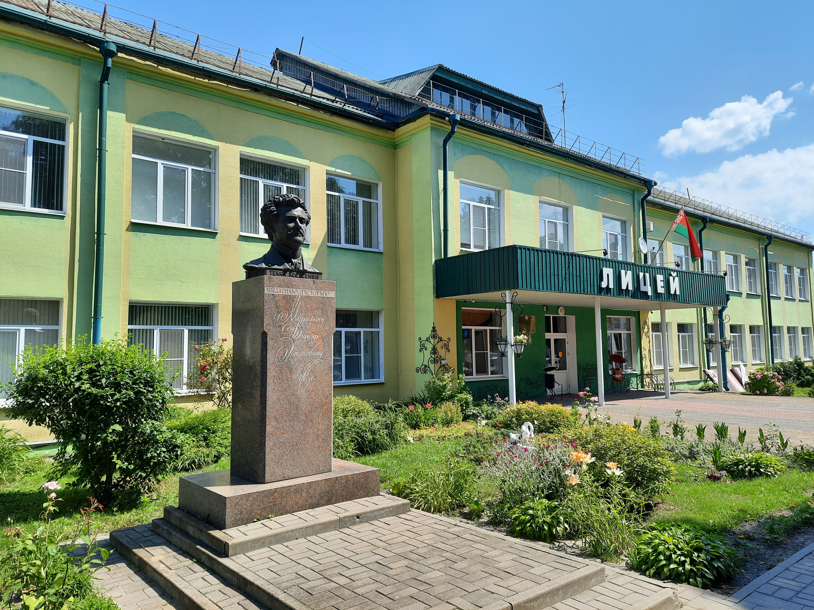

Предпраздничные дни: график работы сокращается на час
Руководство
Должность
Фамилия, имя, отчество
И.о. директора
Лякутин Олег Валерьевич
Заместитель директора по учебной работе
Лякутин Олег Валерьевич
Заместитель директора по учебно-методической работе
Кучер Элла Валерьевна
Заместитель директора по воспитательной работе
Маевская Ирина Михайловна
Предварительная запись на личный прием осуществляется по телефону +375 2340 4 93 98 (приемная).
Об учреждении

Основными задачами Речицкого районного лицея являются:
Повысить качество образования на основе реализации воспитательного потенциала учебных предметов, ориентации на личность учащихся в целях наиболее полного раскрытия их способностей и удовлетворения образовательных потребностей;
Совершенствовать профессиональную компетентность учителей по формированию личностных, метапредметных и предметных компетенций учащихся;
Совершенствовать эффективность социальной, воспитательной и идеологической работы с учащимися;
Укреплять материально-техническую базу лицея для совершенствования соответствующих современным требованиям условий по обучению и воспитанию учащихся, сохранению их здоровья с учетом соблюдения рекомендаций по предупреждению распространения инфекции COVID-19.